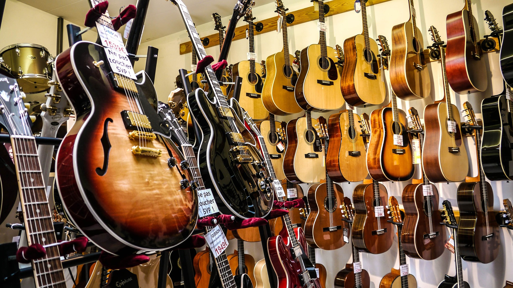

About Groove Guitars
Come Visit Us
Stop by our store! The right guitar for you makes all the difference. We specialize in matching players to the right guitar. We can help you find your groove.
A Symphony of Selections
Step into Groove Guitars, and you'll be greeted by a breathtaking array of guitars that cater to every style and skill level. From classic acoustic melodies to electrifying rock riffs, we have an instrument that resonates with your musical aspirations. Our meticulously curated collection features renowned brands, limited editions, vintage gems, and custom-built masterpieces, ensuring that every musician finds their perfect match.
Amplify Your Sound
To complete your sonic journey, Groove Guitars boasts an extensive selection of amplifiers, pedals, and accessories that will help you shape and refine your unique sound. Whether you're chasing the vintage warmth of a tube amp or exploring the limitless possibilities of digital effects, we have the gear to elevate your performance.
Jam Space and Workshops
Groove Guitars is not just a store; it's a community. We offer a dedicated jam space where musicians can come together, collaborate, and create. Additionally, we host workshops, masterclasses, and live performances, fostering an environment of learning and inspiration.
Trade and Repair Services
Got an old guitar collecting dust, or in need of some tender loving care for your cherished instrument? Our repair and trade-in services ensure that no guitar goes unloved. Let us breathe new life into your old faithful or help you find a new companion.